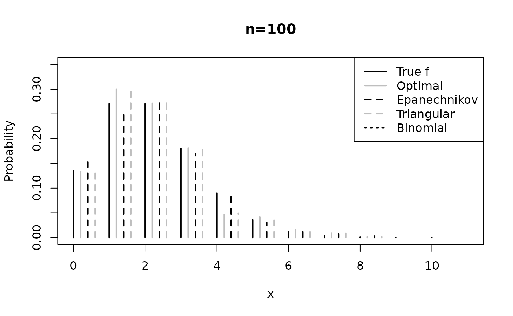

applications_simulated_data.RmdIn this vignette, we demonstrate the kernopt package by applying it to simulated data set. (Senga Kiessé and Durrieu 2024) performed a simulation study using different sample sizes from various pmfs , i.e., a Poisson distribution, a geometric distribution and a negative binomial distribution. The code below presents simulations for estimating count data sets of size that follow the Poisson distribution ${\cal P} (\mu=2)$ (see Figure below).
The kernel estimator was applied with each of three discrete symmetric kernels presented above in comparison with the count binomial asymmetric kernel that follows the binomial distribution ${\cal B}(x+1,(x+h)/(x+1))$ with support ${\cal S}_x=\{0,1,\ldots,x+1\}$, for $x \in {\cal S} \subseteq {\Bbb N}$ and .
The cross-validation method was used to select the bandwidth
parameter
with the help of the cv_bandwith() function.
# Simulated data
mu <- 2
x <- 0:10
f <- dpois(x, mu)
n <- 100
y <- sort(rpois(n, mu))
# Optimal kernel
k <- 1
H <- seq((max(y) - min(y)) / 200, (max(y) - min(y)) / 2, length.out = 50)
hcv_opt_k1 <- cv_bandwidth(kernel = "optimal", y, H, k)
Fn_opt_k1 <- estim_kernel(kernel = "optimal", x, hcv_opt_k1, y, k)
# Triangular kernel
a <- 1
hcv_trg_a1 <- cv_bandwidth(kernel = "triang", y, H, a)
Fn_triang_a1 <- estim_kernel(kernel = "triang", x, hcv_trg_a1, y, a)
# Epanechnikov kernel
H <- seq(2, 10, 1)
hcv_epanech <- cv_bandwidth(kernel = "epanech", y, H)
Fn_epanech <- estim_kernel(kernel = "epanech", x, hcv_epanech, y)
# Binomial kernel
H <- seq((max(y) - min(y)) / 500, 1, length.out = 50)
hcv_bin <- cv_bandwidth(kernel = "binom", y, H)
Fn_bino <- estim_kernel(kernel = "binom", x, hcv_bin, y)
# Graph
plot(x, f, xlab = "x", ylab = "Probability", xlim = c(0, 11), ylim = c(0, 0.35), type = "h", lwd = 2, main = paste("n=", n, sep = ""))
points(x + 0.2, Fn_opt_k1, type = "h", lty = 1, col = "grey", lwd = 2)
points(x + 0.4, Fn_epanech, type = "h", lty = 2, lwd = 2)
points(x + 0.6, Fn_triang_a1, type = "h", lty = 2, col = "grey", lwd = 2)
points(x + 0.8, Fn_bino, type = "h", lty = 3, lwd = 2)
legend("topright", c("True f", "Optimal", "Epanechnikov", "Triangular", "Binomial"),
lty = c(1, 1, 2, 2, 3), lwd = 2, col = c("black", "grey", "black", "grey", "black"),
inset = .0
)